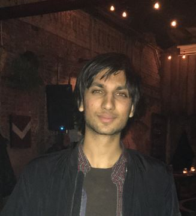

Hey, I'm Parth! I'm a research scientist specializing in Artificial Intelligence, Neuroscience and Robotics.
As a developer and researcher, I strive to be user-focused. I aim to solve real-world problems which can help make a difference in the future. I believe that simplicity in design and experience make a product stand out.
My main research interests focus on the subsections of Neuroscience-inspired Intelligence and Bio-Engineered Machines. I also enjoy spending my spare time delving into Quantum Physics and Game Development .
Outside of work, I enjoy watching and playing Soccer (seriously up to talk anytime), playing music, and practicing martial arts.
I'm also an avid Chess player and always open to discuss variations of the Jerome gambit.
If you are a recruiter, alumni, or student and would like to get in touch with me, feel free to hit me up!